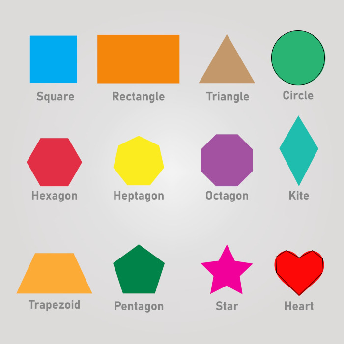

CSS Notes
display: block;
Puts elements on their own line.
The a tags are now block elements.
They have their own line.
a tag 1
a tag 2
a tag 3
display: inline;
Makes elements in line.
The <p> tags are now inline.
p tag1
p tag2
p tag3
display: none;
Makes the element invisible,
but it's still in the Elements panel.

Background image
background-image: url("thumbs-up.png");
Add the filename or URL for the image.
Adding multiple background images
background-image: url("thumbs-up.pg");
background-image: linear-gradient(white, gray);
Add background images to nesting elements.
The elements nested deeply will appear in front.
Basic gradient
background-image: linear-gradient(white, gray);
Multiple Colors gradient
background-image: linear-gradient(white, gray, green);
Add more colors by seperating them with a comma.
Gradient Directions
background-image: linear-gradient(to bottom right, white, gray, green);
to change the direction, add to the beginning:
to right
to bottom right
to left
to bottom left
Gradient Degrees
background-image: linear-gradient(90deg, white, gray, green);
To change the direction, add degrees to the beginning:
90deg (right)
135deg (bottom right)
270deg (left)
215deg (bottom left)
RGBA
color: rgba(6, 68, 0, 0.259);
Sets the transparency of colors
Red Green Blue Alpha
0 alpha is invisible
1 alpha is fully visible
Opacity
opacity: 0.25;
Sets the transparency of the element
0 is invisible
1 is fully visible

Grouping selector
i-green, b-green {
color: green;
}
Seperate elements, classes, or IDs with commas.
The grouping selector applies the style to all of those elements.
itlaic tag
bold tag
italic tag
bold tag
Nesting selector
i b {
color: green;
}
Select the nested element(s)
Example: <b> is nested in <i>
italic
Inside the <i> tag
italic
Inside the <b> tag
Not in the <i> tag
Specificity
Styling priority
1. inline
2. id
3. class
4. element
Styles are applied based on their specificity or priority.
Styles with lower priority get overwritten.
!important overwrites them all.
!important also goes by load order.
The !important that gets loaded last gets applied.
Padding shorthand